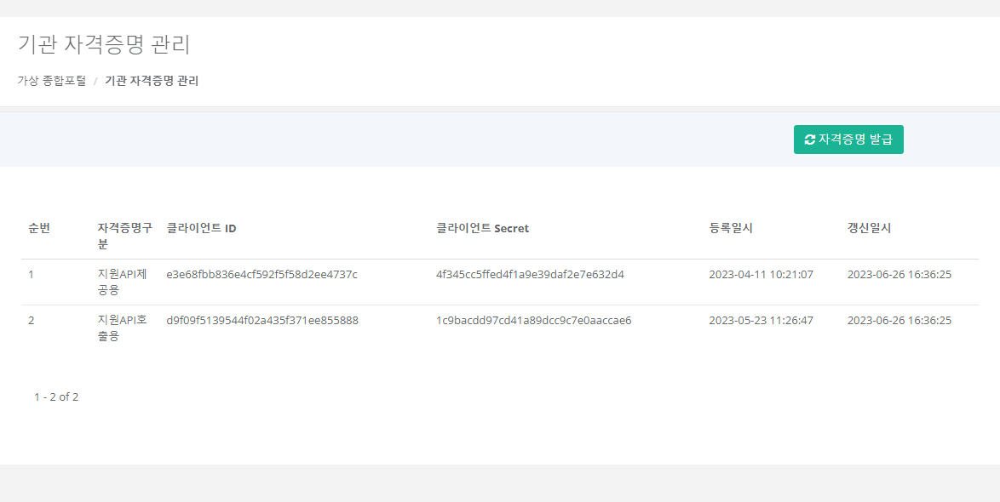
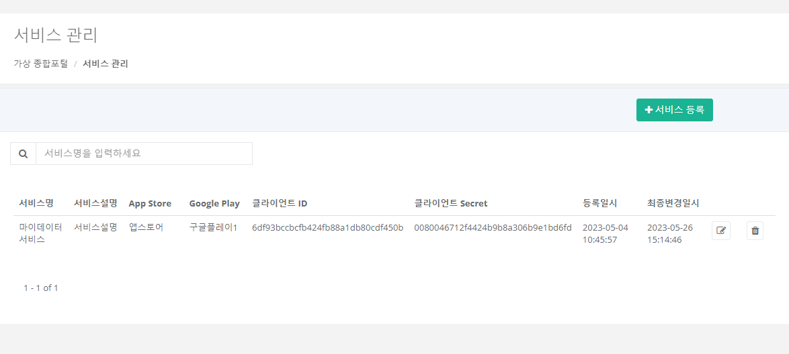
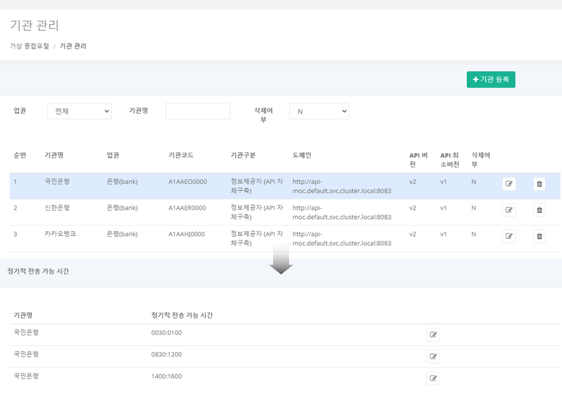
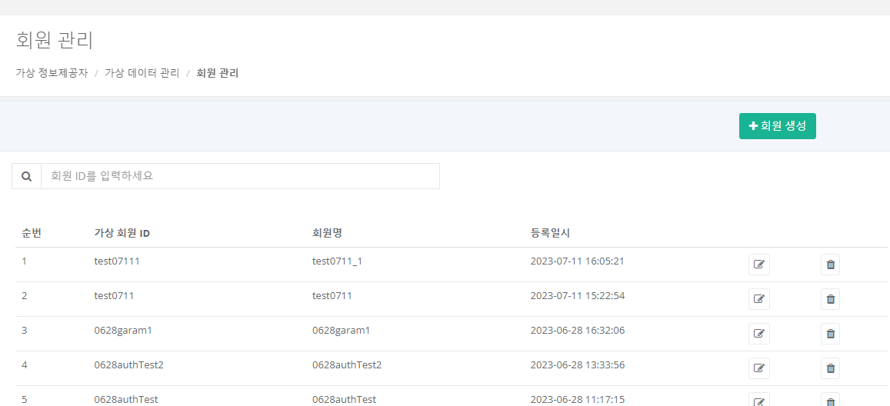
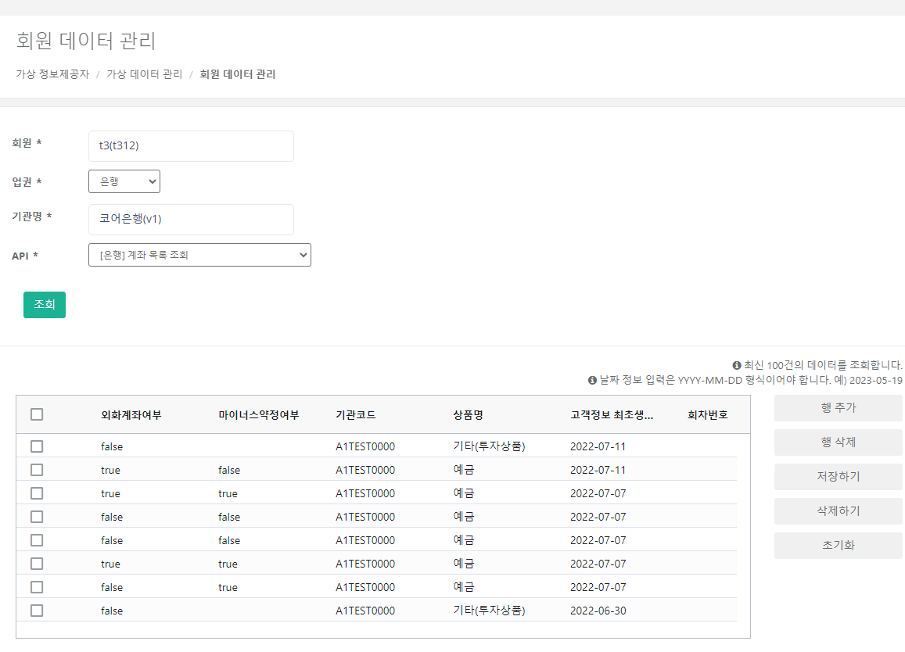

iMDP VT 사용 절차(Workflow 가이드)
마이데이터 서비스의 테스트에 필요한 내용을 iMDP-VT를 통해 진행하는 기본적인 절차를 설명합니다.
1. 마이데이터 사업자 기관 자격증명 발급
마이데이터 서비스를 통해 정보제공자로 전송요구하기 위해서는 우선 마이데이터 종합포털에 마이데이터 사업자 기관 및 해당 서비스가 등록되어야 합니다.
마찬가지로 iMDP VT에서 가장 먼저 할 일은 마이데이터 사업자 기관과 그 서비스를 가상 종합포털에 등록하는 것인데, 사업자 기관은 따로 등록할 필요 없이 종합포털 지원 API 호출을 위한 기관 자격증명만 발급받으면 됩니다.
- 가상 종합포털 > 기관 자격증명 관리에서 자격증명 발급을 클릭합니다.
지원 API 호출용과 지원 API 제공용 자격증명이 발급되며, 이후 자격증명 발급을 클릭하면 자격증명이 갱신됩니다.
발급된 자격증명은 가상 종합포털로 지원 API를 호출하기 위한 접근토큰 발급 요청 시 사용합니다.

2. 마이데이터 서비스 등록
마이데이터 서비스를 등록합니다.
- 가상 종합포털 > 서비스 관리에서 서비스 등록을 클릭합니다.
- 등록 팝업에서, 서비스명과 서비스설명을 입력한 후 등록을 클릭합니다.
서비스가 등록되면, 서비스 자격증명도 함께 발급됩니다.
발급된 서비스 자격증명은 서비스 목록이나 상세의 클라이언트 ID와 클라이언트 Secret 항목으로 확인할 수 있으며, 가상 정보제공자로 인증 API나 정보제공-공통-001 API(/apis) 호출 시 사용합니다.

3. 정보제공자 기관 등록
마이데이터 서비스가 전송요구할 대상인 정보제공자를 가상 종합포털에 등록합니다.
- 가상 종합포털 > 기관 관리에서 기관 등록을 클릭합니다.
- 등록 팝업에서, 업권, 기관구분, 기관명, API 버전, API 최소버전을 입력한 후 등록을 클릭합니다.
등록된 기관의 행(row)을 클릭하면 화면 하단에서 API 서버 공인 IP, IP, 정기적 전송 가능 시간을 등록할 수 있습니다.

4. 정보제공자 데이터 생성
마이데이터 서비스는 전송요구의 주체인 고객으로부터 전송요구를 위임받아 정보제공자에게 고객의 요구를 전달합니다.
즉, 마이데이터 서비스의 고객이 정보제공자의 회원으로서 신용정보를 보유하고 있어야 하므로, 정보제공자에 회원으로서 가입하고 해당 회원의 신용정보 데이터를 생성해야 합니다.
4.1 정보제공자 회원 생성
- 가상 정보제공자 > 가상 데이터 관리 > 회원 관리에서 회원 생성을 클릭합니다.
- 생성 팝업에서, 회원 ID, 회원명을 입력합니다.
- 해당 회원이 가입할 정보제공자를 기관명에서 선택합니다.
- 생성을 클릭합니다.
회원이 생성되고, 선택한 정보제공자의 회원으로 가입됩니다. 회원 상세정보()의 가입 기관에서 가입 현황을 확인하고 기관명에서 다른 기관에 가입할 수 있습니다.

4.2 신용정보 테스트 데이터 생성
- 가상 정보제공자 > 가상 데이터 관리 > 테스트 데이터 생성으로 이동합니다.
- 회원에서 회원을 선택합니다.
- 업권에서 기관의 업권을 선택합니다.
- 기관명에서 기관을 선택합니다. 회원이 가입한 기관만 조회되므로, 표시되는 기관이 없다면 회원 가입을 먼저 진행합니다.
- 상품 > 상품 유형에서 생성을 원하는 자산의 유형을 선택합니다. 상품 상세는 선택하지 않으면 랜덤으로 지정됩니다.
- 데이터 생성을 클릭합니다.
데이터 생성이 완료되면, 생성된 자산이 기관·유형별로 표시됩니다.

4.3 생성 데이터 확인
생성된 테스트 데이터는 가상 정보제공자 > 가상 데이터 관리 > 회원 데이터 관리에서 테이블 형태로 조회할 수 있습니다.
